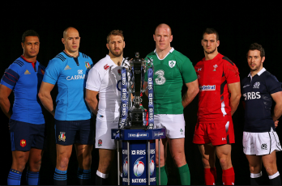

Tony Ward expects Ireland 'to go through hell' as they look for Six Nations answers
Ireland will "go through hell" over the next few days as they come to terms with a disastrous first-half performance in Edinburgh that shattered any aspirations of a Grand Slam.
"They were a lot better than I expected them to be. I think what disappointed me more than anything was the lack of energy in the opening half. To concede three tries in the manner we did... they were relatively cheaply given up.
"The reality is, after one game we're out of the Triple Crown, we're out of the Grand Slam, we're still in the championship but we're playing catch-up. "We have another international in a few days' time and I think that's a good thing. They're going to go through hell in the next few days with Joe, given the way they played."
Ireland's preparation for their Six Nations opener was disrupted when their police escort took them on an alternative route to Murrayfield, before a pipe band's march on to the pitch left them kicking their heels a little longer.
Joe Bloggs | Source: RTE NEWS